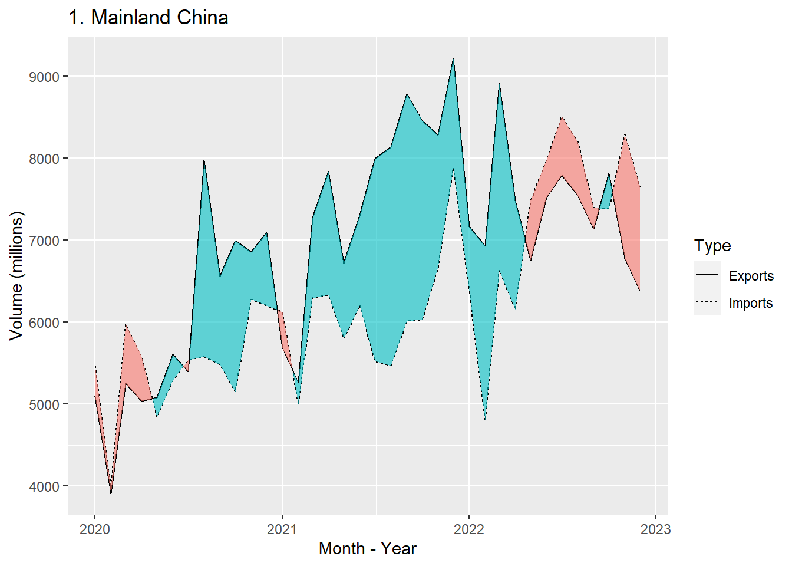
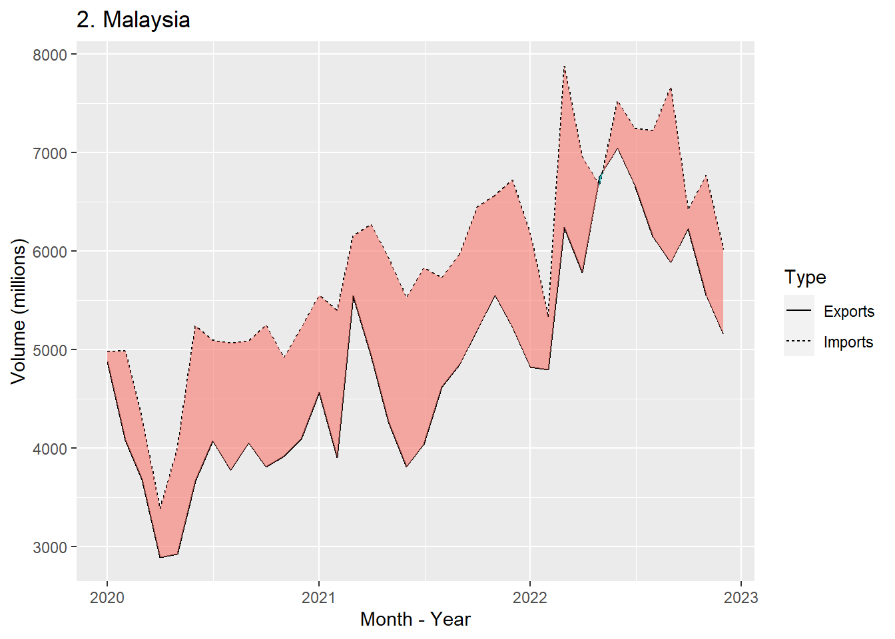
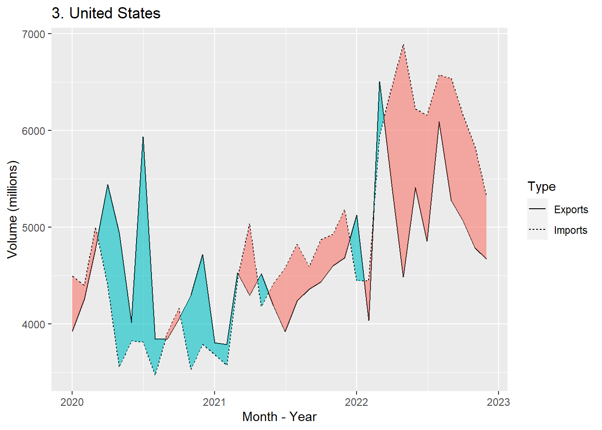
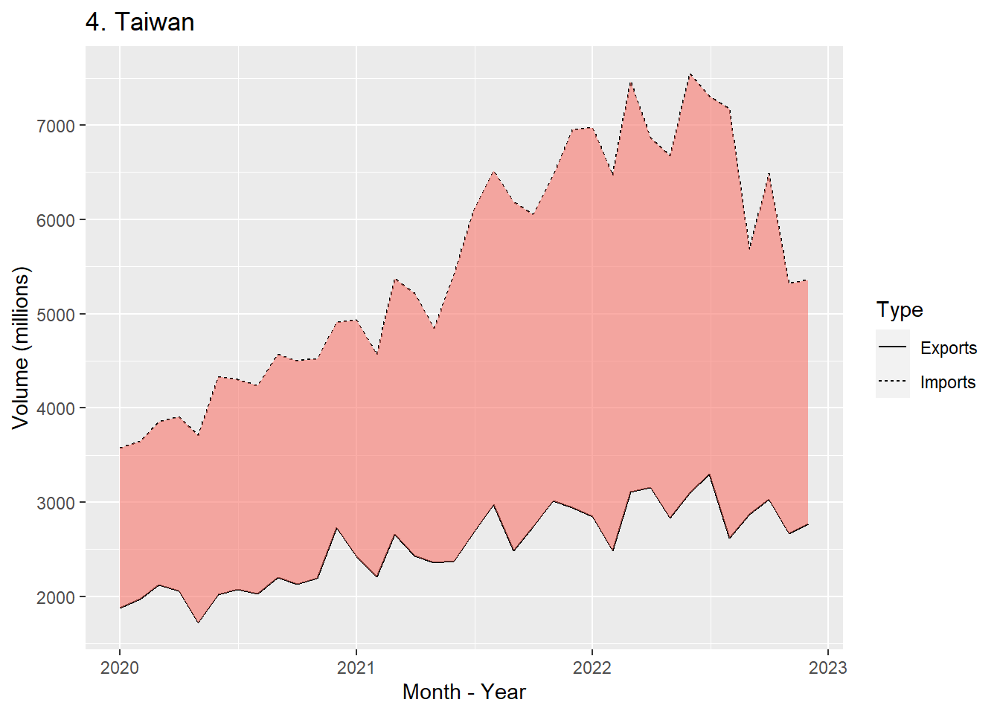
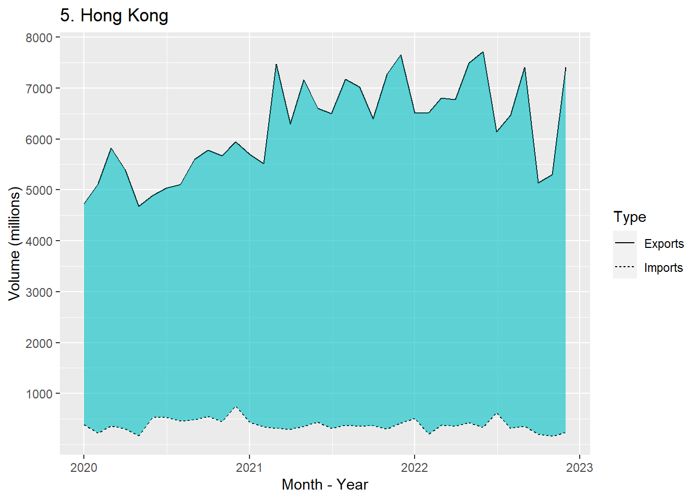
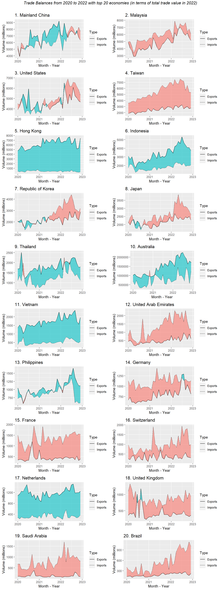

pacman::p_load(readxl, grid, gridExtra, tidyverse, lubridate, ggbraid)Trade Trends
I will attempt to visualise how the main world events of this period - the COVID-19 pandemic and Russia’s military actions in Ukraine - impacted merchandise trade with Singapore.
For this exercise, I will use monthly data on merchandise trade volumes with economies that Singapore imports from or exports to, from January 2020 to December 2022 inclusive. Trade volumes are shown as values, in Singapore dollars. The data is the Singapore Department of Statistics and the dataset is available here.
Loading packages and importing dataset
Since the import and export data are in different worksheets of the same Excel workbook, they will be loaded separately. The informative headers and footnotes that do not comprise actual data are excluded.
imports <- read_excel("data/trade_data.xlsx", sheet = 2, skip = 9, n_max = 119)
exports <- read_excel("data/trade_data.xlsx", sheet = 3, skip = 9, n_max = 91)
Cleaning the data and consolidating to one data set:
subset data to period of study (2020 to 2022 inclusive) and filter out rows corresponding to total merchandise values and entire geographical regions
use stringr package (part of core Tidyverse packages) to remove units (i.e. “(thousands)“) from economy names
replace values in [Year Month] columns in preparation for reformatting to dates using lubridate
replace na values with 0
convert dataset from wide to long format, using gather()
since trade balances will be a focal point of our analysis, we must have both import and export data for each economy, hence we will use inner_join() to merge the two datasets
add new columns Year and Month to facilitate grouping later on
add new column Balance which calculates the trade surplus or deficit
add new column Total which calculates the total trade value (i.e. imports + exports)
(finally, some further cleaning to shorten economy names to reduce clutter in visualisation)
imports <- imports %>%
select(1, 3:38) %>%
filter(!row_number() %in% c(1,2,3,4,5,6,7)) %>%
rename(Economy = "Data Series") %>%
mutate(Economy = sapply(str_split(Economy, " \\("), function(x) x[1])) %>%
rename("01-12-2022"="2022 Dec", "01-11-2022"="2022 Nov", "01-10-2022"="2022 Oct",
"01-09-2022"="2022 Sep", "01-08-2022"="2022 Aug", "01-07-2022"="2022 Jul",
"01-06-2022"="2022 Jun", "01-05-2022"="2022 May", "01-04-2022"="2022 Apr",
"01-03-2022"="2022 Mar", "01-02-2022"="2022 Feb", "01-01-2022"="2022 Jan",
"01-12-2021"="2021 Dec", "01-11-2021"="2021 Nov", "01-10-2021"="2021 Oct",
"01-09-2021"="2021 Sep", "01-08-2021"="2021 Aug", "01-07-2021"="2021 Jul",
"01-06-2021"="2021 Jun", "01-05-2021"="2021 May", "01-04-2021"="2021 Apr",
"01-03-2021"="2021 Mar", "01-02-2021"="2021 Feb", "01-01-2021"="2021 Jan",
"01-12-2020"="2020 Dec", "01-11-2020"="2020 Nov", "01-10-2020"="2020 Oct",
"01-09-2020"="2020 Sep", "01-08-2020"="2020 Aug", "01-07-2020"="2020 Jul",
"01-06-2020"="2020 Jun", "01-05-2020"="2020 May", "01-04-2020"="2020 Apr",
"01-03-2020"="2020 Mar", "01-02-2020"="2020 Feb", "01-01-2020"="2020 Jan") %>%
replace(is.na(.), 0) %>%
gather(key = "Date", value = "Imports", 2:37)
exports <- exports %>%
select(1, 3:38) %>%
filter(!row_number() %in% c(1,2,3,4,5,6,7)) %>%
rename(Economy = "Data Series") %>%
mutate(Economy = sapply(str_split(Economy, " \\("), function(x) x[1])) %>%
rename("01-12-2022"="2022 Dec", "01-11-2022"="2022 Nov", "01-10-2022"="2022 Oct",
"01-09-2022"="2022 Sep", "01-08-2022"="2022 Aug", "01-07-2022"="2022 Jul",
"01-06-2022"="2022 Jun", "01-05-2022"="2022 May", "01-04-2022"="2022 Apr",
"01-03-2022"="2022 Mar", "01-02-2022"="2022 Feb", "01-01-2022"="2022 Jan",
"01-12-2021"="2021 Dec", "01-11-2021"="2021 Nov", "01-10-2021"="2021 Oct",
"01-09-2021"="2021 Sep", "01-08-2021"="2021 Aug", "01-07-2021"="2021 Jul",
"01-06-2021"="2021 Jun", "01-05-2021"="2021 May", "01-04-2021"="2021 Apr",
"01-03-2021"="2021 Mar", "01-02-2021"="2021 Feb", "01-01-2021"="2021 Jan",
"01-12-2020"="2020 Dec", "01-11-2020"="2020 Nov", "01-10-2020"="2020 Oct",
"01-09-2020"="2020 Sep", "01-08-2020"="2020 Aug", "01-07-2020"="2020 Jul",
"01-06-2020"="2020 Jun", "01-05-2020"="2020 May", "01-04-2020"="2020 Apr",
"01-03-2020"="2020 Mar", "01-02-2020"="2020 Feb", "01-01-2020"="2020 Jan") %>%
replace(is.na(.), 0) %>%
gather(key = "Date", value = "Exports", 2:37)trade_data <- inner_join(imports, exports, by = c("Economy", "Date"))trade_data <- trade_data %>%
mutate(Date = dmy(Date)) %>%
mutate(Year = year(Date), Month = month(Date)) %>%
mutate(Balance = (Exports - Imports)) %>%
mutate(Total = (Exports + Imports))
The code chunk below allows us to identify the top 20 countries in terms of total merchandise trade value, for 2022.
trade_data1 <- trade_data %>%
filter(Year == 2022) %>%
group_by(Economy) %>%
summarise(Year_Total = sum(Total)) %>%
arrange(Year_Total)
We are able to identify the top 20 economies by total merchandise trade value in 2022: China, Malaysia, United States, Taiwan, Hong Kong, Indonesia, Republic of Korea, Japan, Thailand, Australia, Vietnam, United Arab Emirates, Philippines, Germany, France, Switzerland, Netherlands, United Kingdom, Saudi Arabia and Brazil. Our study of individual trade balances will focus on these 20 economies.
Import and export trends for top 20 countries by total value of merchandise trade
I will plot the trade balances for the top 20 countries, in descending order of total trade value in 2022. To keep this short, only the code chunks for the first 5 plots will be shown initially, but all 20 charts will be displayed in a grid later on.
For each chart, the import and export values for each month will be plotted as lines. I will then use the ggplot2 extension ggbraid to fill the gap between the lines, with different colours indicating trade surpluses and trade deficits.
China_wide <- trade_data %>%
filter(Economy == "Mainland China")
China_long <- China_wide %>%
gather(key = "Type", value = "Value", 3:4)
p1 <- ggplot(data=China_long, aes(Date)) +
geom_line(aes(y=Value, linetype=Type)) +
geom_braid(data=China_wide, aes(ymin=Imports, ymax=Exports,
fill=after_stat(braid)), alpha=0.6,
show.legend=FALSE) +
labs(title="1. China") +
xlab("Month - Year") +
ylab("Volume (millions)") +
scale_y_continuous(breaks=seq(4000000,9000000,1000000),
labels=seq(4000,9000,1000))
p1
Malaysia_wide <- trade_data %>%
filter(Economy == "Malaysia")
Malaysia_long <- Malaysia_wide %>%
gather(key = "Type", value = "Value", 3:4)
p2 <- ggplot(data=Malaysia_long, aes(Date)) +
geom_line(aes(y=Value, linetype=Type)) +
geom_braid(data=Malaysia_wide, aes(ymin=Imports, ymax=Exports,
fill=after_stat(braid)), alpha=0.6,
show.legend=FALSE) +
labs(title="2. Malaysia") +
xlab("Month - Year") +
ylab("Volume (millions)") +
scale_y_continuous(breaks=seq(3000000,8000000,1000000),
labels=seq(3000,8000,1000))
p2
US_wide <- trade_data %>%
filter(Economy == "United States")
US_long <- US_wide %>%
gather(key = "Type", value = "Value", 3:4)
p3 <- ggplot(data=US_long, aes(Date)) +
geom_line(aes(y=Value, linetype=Type)) +
geom_braid(data=US_wide, aes(ymin=Imports, ymax=Exports,
fill=after_stat(braid)), alpha=0.6,
show.legend=FALSE) +
labs(title="3. United States") +
xlab("Month - Year") +
ylab("Volume (millions)") +
scale_y_continuous(breaks=seq(4000000,7000000,1000000),
labels=seq(4000,7000,1000))
p3
Taiwan_wide <- trade_data %>%
filter(Economy == "Taiwan")
Taiwan_long <- Taiwan_wide %>%
gather(key = "Type", value = "Value", 3:4)
p4 <- ggplot(data=Taiwan_long, aes(Date)) +
geom_line(aes(y=Value, linetype=Type)) +
geom_braid(data=Taiwan_wide, aes(ymin=Imports, ymax=Exports,
fill=after_stat(braid)), alpha=0.6,
show.legend=FALSE) +
labs(title="4. Taiwan") +
xlab("Month - Year") +
ylab("Volume (millions)") +
scale_y_continuous(breaks=seq(2000000,7000000,1000000),
labels=seq(2000,7000,1000))
p4
For Hong Kong, I encountered the problem that although there was a persistent trade surplus over the period of interest, the ribbon (area between the export and import lines) was automatically coloured peach (#F8766D). In previous charts, surpluses were coloured cyan (#00BFC4) and deficits peach. To resolve this issue, I manually reversed the colour options using scale_fill_manual(), to ensure consistency in the visualisation. (The same problem was encountered with other charts showing persistent surplus, and the same resolution applied.)
HK_wide <- trade_data %>%
filter(Economy == "Hong Kong")
HK_long <- HK_wide %>%
gather(key = "Type", value = "Value", 3:4)
p5 <- ggplot(data=HK_long, aes(Date)) +
geom_line(aes(y=Value, linetype=Type)) +
geom_braid(data=HK_wide, aes(ymin=Imports, ymax=Exports,
fill=after_stat(braid)), alpha=0.6,
show.legend=FALSE) +
scale_fill_manual(values=c("#00BFC4", "#F8766D"), name="fill") +
labs(title="5. Hong Kong") +
xlab("Month - Year") +
ylab("Volume (millions)") +
scale_y_continuous(breaks=seq(1000000,8000000,1000000),
labels=seq(1000,8000,1000))
p5
The code chunk below arranges all 20 plots in a grid fashion with two columns and a main title.
PlotsList<- list(p1,p2,p3,p4,p5,p6,p7,p8,p9,p10,
p11,p12,p13,p14,p15,p16,p17,p18,p19,p20)
grid.arrange(grobs = PlotsList, ncol = 2,
top = textGrob("Trade Balances from 2020 to 2022 with top 20 economies (in terms of total trade value in 2022)\n",gp=gpar(fontsize=12,font=3)))